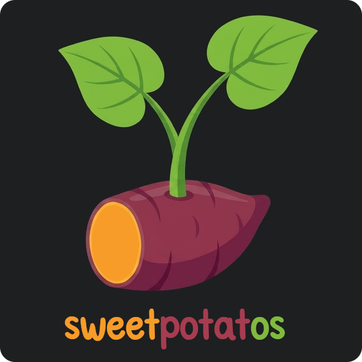
SweetPotatOs
The Arch live ISO, installer, and package channel.
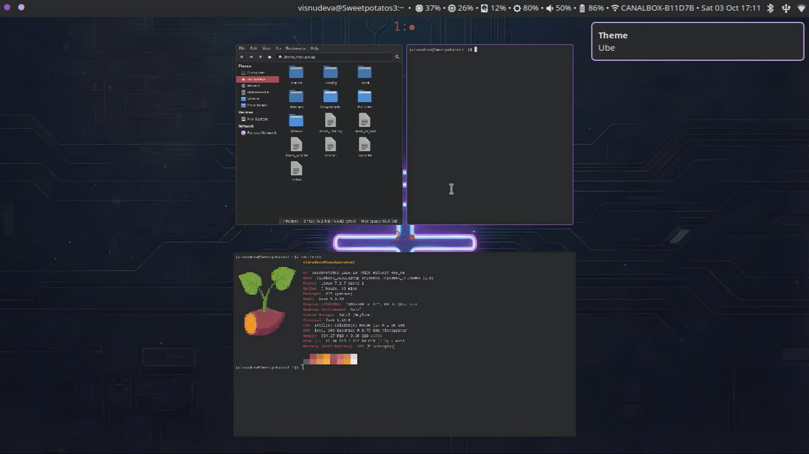
GitHubThe distro, the compositor, the apps that ship with it, and SweetPotato themer.

The Arch live ISO, installer, and package channel.

GitHub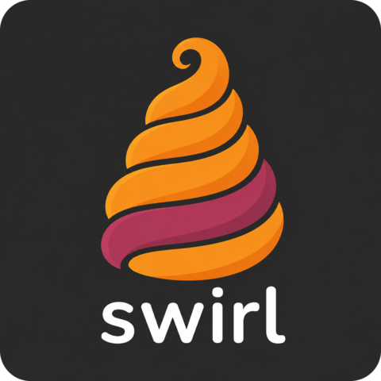
Scrolling tiling Wayland compositor. Columns sit on a horizontal strip.
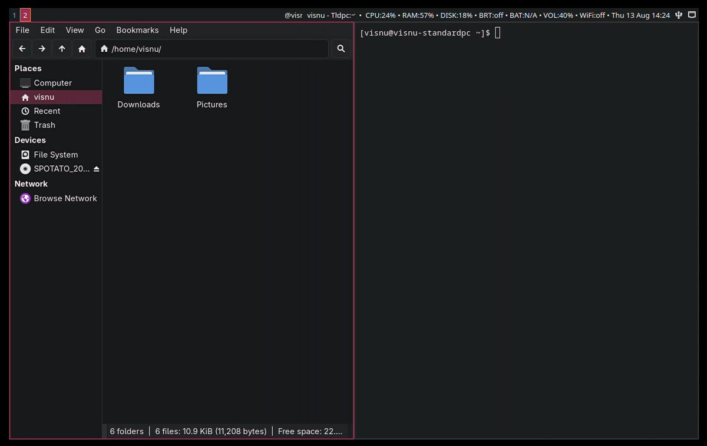
Swirl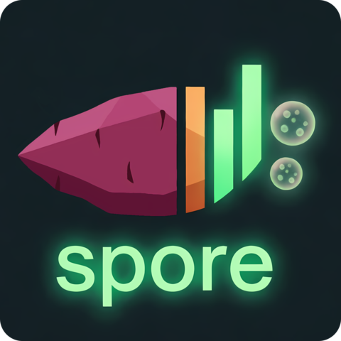
Terminal web radio and local music, with a visualizer.
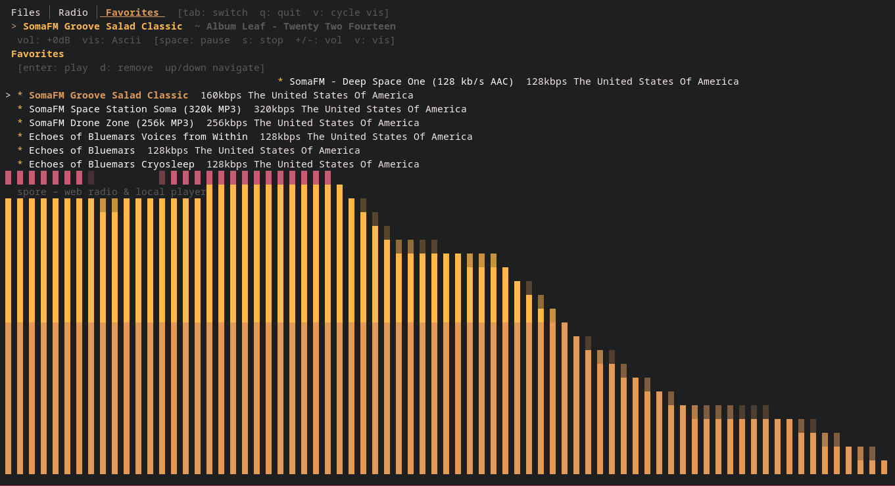
Spore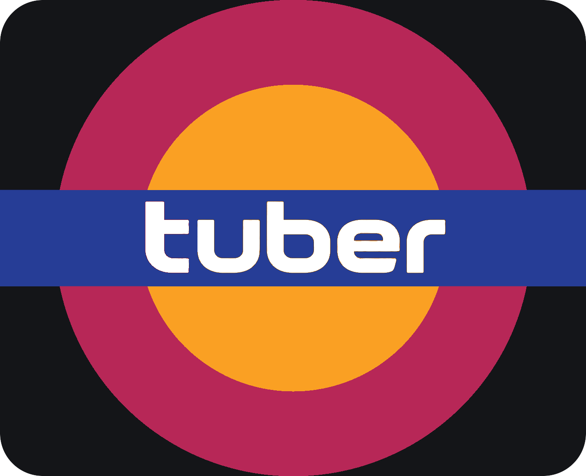
Light terminal BitTorrent client.
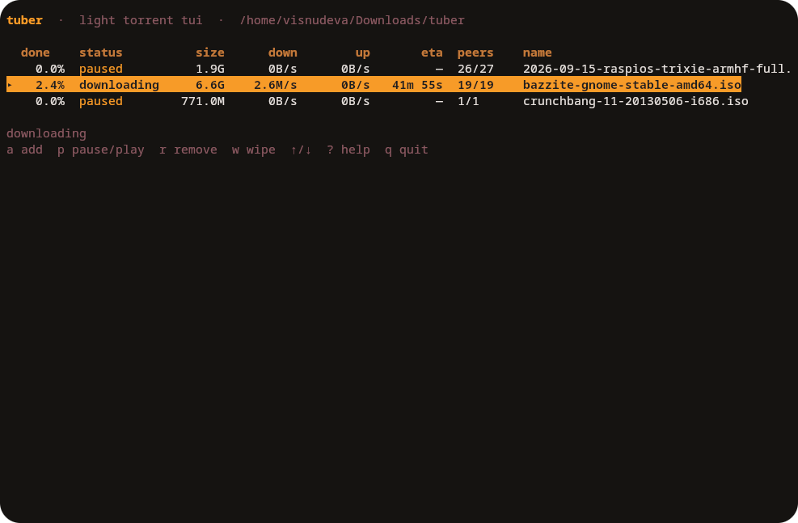
Tuber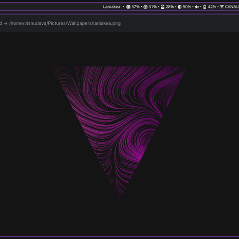
Generative flow-field wallpaper. Watch it draw, pick a shape mask, then Apply.
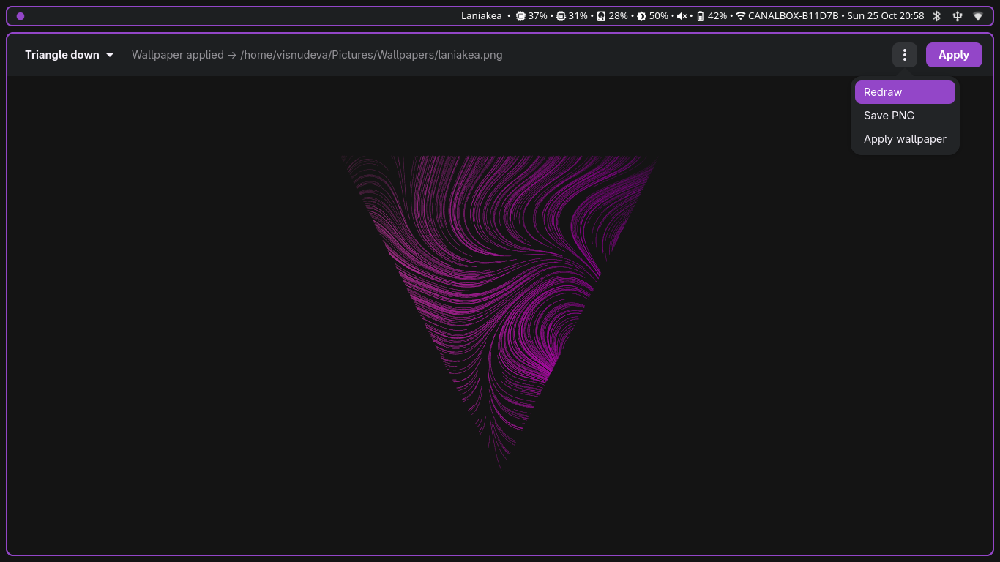
Laniakea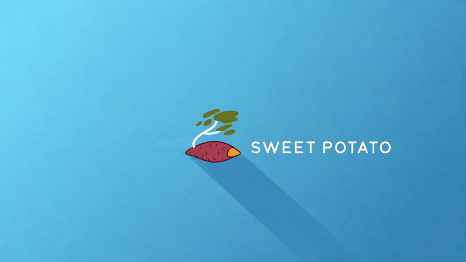
Desktop themer for Swirl: colors, bar, lock screen, and terminal.
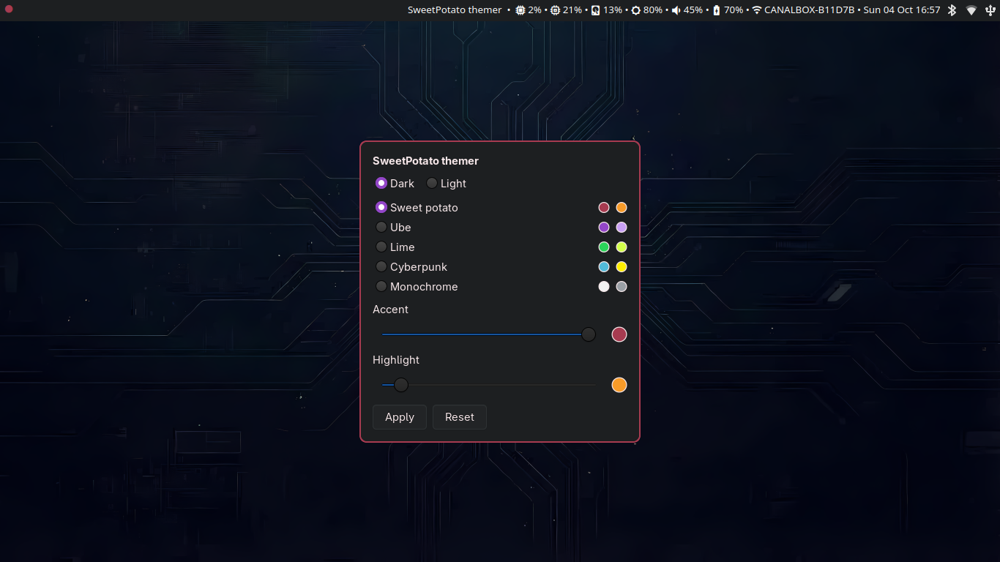
SweetPotato themer